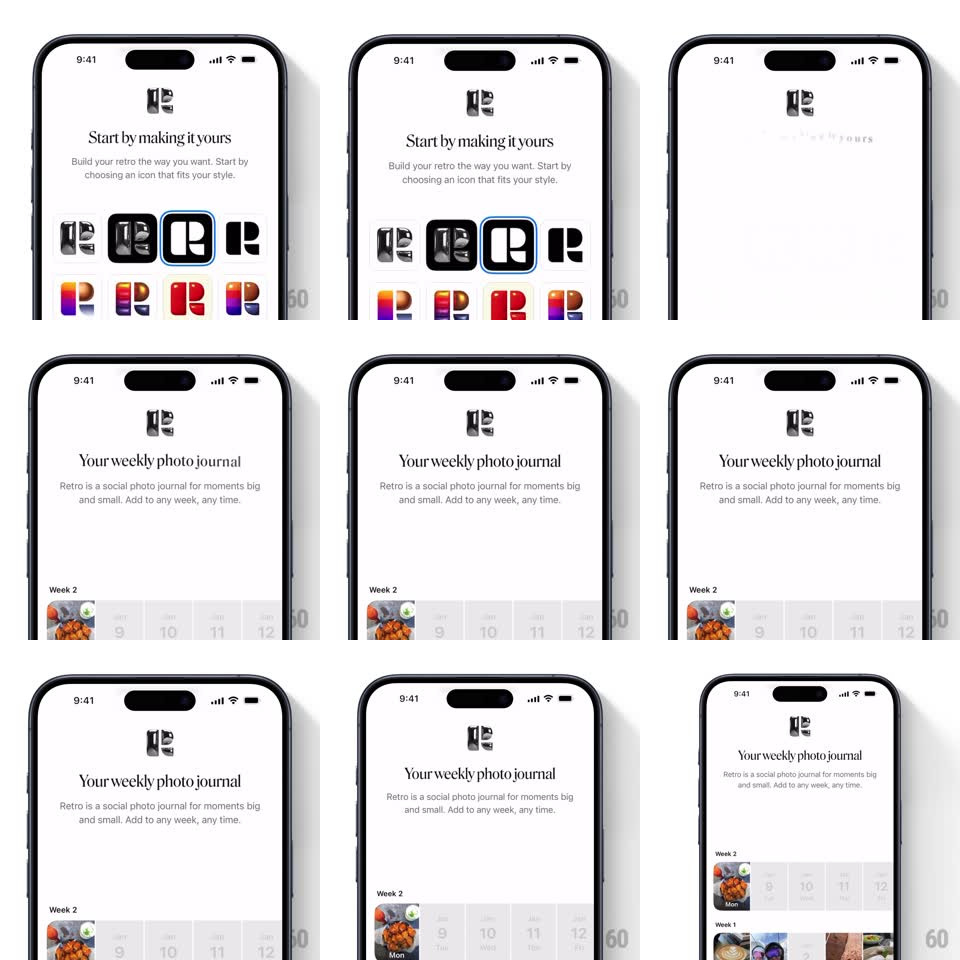

Media
Frame-by-frame

Rebuild this interaction 1:1: Retro's text-flip page transition - between onboarding pages the serif headline flips away in 3D with a blur and the next page's headline flips in, while the content below crossfades.

Rebuild this interaction 1:1: Retro's text-flip page transition - between onboarding pages the serif headline flips away in 3D with a blur and the next page's headline flips in, while the content below crossfades. ## Integration Integration: stack-agnostic spec - springs given as stiffness/damping, timed motions as duration + curve; map every value to your framework and animation library of choice. ## Scene Page 1: Retro logo, headline "Start by making it yours", caption "Build your retro the way you want. Start by choosing an icon that fits your style.", and a grid of alternate app icons (R logos in different colorways, the selected one ringed blue). Page 2: headline "Your weekly photo journal", caption "Retro is a social photo journal for moments big and small...", and the week strip rising at the bottom (Week 2 with a food photo and day cells). ## Motion spec Pattern: 3D headline flip with blur handoff. - Trigger (swipe or button): the current headline rotates around its horizontal axis (rotateX 0 -> 90deg, 280ms, ease-in) while a horizontal blur ramps up (0 -> 8px) and opacity drops - the text tips away like a split-flap. - At 90deg the swap happens; the new headline continues the same rotation (90 -> 0deg? no - it enters from -90deg -> 0, 300ms, ease-out) as the blur ramps down - one continuous flap motion. - The caption follows 80ms behind with the same flip at 60% amplitude. - The content area crossfades (300ms): icon grid out, week strip in - the strip also rises 20px as it fades in. - The Retro logo at top stays fixed through the whole transition. ## Calibration - The blur peaks exactly at the flip's midpoint - it hides the text swap. - Headline flip is about 600ms end to end - snappy split-flap, not a slow card turn. ## Reduced motion Headline and caption crossfade; content crossfades. ## Don't miss - The flip axis sits on the headline's vertical center - text compresses upward and re-expands downward. - The blue selection ring on the chosen icon stays on during the exit fade.